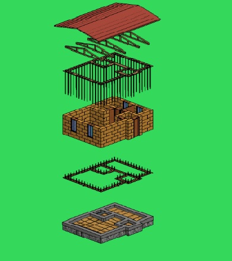

PROPUESTA DE VIVIENDA RURAL EN CUSCO CONSTRUIDA CON FARDOS DE PAJA COMO ALTERNATIVA A LA VIVIENDA DE ADOBE ANTE EL FENÓMENO DE LAS HELADAS
La investigacion proporciona la informacion necesaria sobre las caracteristicas del fardo de paja, los sistemas constructivos, normativas existentes, estudios experimentales y referentes que permitan construir viviendas en base a este material para mejorar la calidad de las viviendas rurales de esta region.Uno de los principales problemas identificados en la zona son las heladas, que son un fenomeno meteorologico que ocurren ano tras ano entre los meses de abril a setiembre debido al descenso de las temperaturas hasta 20 bajo cero y que no solo afectan a la salud de la poblacion, teniendo un promedio nacional de 449 771 damnificados, sino tambien causan danos a las viviendas, infraestructura, asi como a los ganados y cultivos .Esto se debe al nivel de pobreza de los pobladores rurales de la sierra que no cuentan con los recursos economicos suficientes para acceder a una vivienda de mejor calidad ya que tienen un ingreso per capita de S/214.70 soles por lo que el 68.5% de las viviendas estan construidas con adobe y tapia y el 86% tienen pisos de tierra que son materiales mas accesibles para la poblacion pero que sin embargo no brindan un confort termico adecuado para enfrentar las heladas.Los Fardos de paja son un material de construccion nuevo y alternativo a los materiales tradicionales que proporcionan viviendas accesibles, durables, comodas, seguras y con buen confort termico.
Los fardos de paja tambien conocidos como balas o pacas de paja, son bloques rectangulares y comprimidos elaborados a base de paja seca de residuos de cosechas de cereales gramineos como trigo, arroz, avena y cebada.El peso de cada fardo depende de las medidas, el diseno, la condicion de la enfardadora, el tipo de paja, asi como la humedad de este pero los pesos estandares son de 21 a 36 kg para un fardo de 36x46 x91 cm, de 32 a 41 kg para un fardo de 41 x 46 x91cm y 57 a 68 kg para un fardo de 41x61 x 122 cm.El primer paso para la elaboracion es la recoleccion de la paja de preferencia de tallos no menores a 25 cm debido a que tienen una mejor composicion, posteriormente se prensa la paja con una enfardadora o camara que la mantiene sujeta firmemente y la comprime hasta aumentar su densidad.Para el caso de un fardo con una densidad de 60 kg/m3 se tiene un coeficiente de conductividad termica de 0,067 W/mK que comparado con un bloque de adobe estandar que tiene un coeficiente de 0,20 W/mK resulta mucho mas bajo por lo que los fardos tienen una mejor capacidad para transmitir calor ya que a menor coeficiente mejor capacidad de aislamiento.Este coeficiente se puede mejorar mediante el uso de revoques como arcilla que aumenta la capacidad de aislamiento de los fardos o la cal que permiten la transpirabilidad de la paja para reducir el porcentaje de humedad, sin embargo, este tipo de revoques tambien mejoran su resistencia al fuego ya que pese a que la paja es un material bastante inflamable, el uso de revestimientos y la compresion del fardo mejoran su comportamiento teniendo como resultado una resistencia de F-120, que aunque es menor a la del adobe que tiene una resistencia de F-150, garantiza las condiciones minimas de seguridad.El primero conocido tambien como sistema Nebraska se caracteriza por usar los fardos de paja como parte de la estructura ya que soportan el peso de la cubierta, en el sistema portante se utiliza una estructura de vigas y columnas similar a una construccion convencional, los fardos de paja se colocan entre las columnas y sirven solo como aislante.Para la construccion de viviendas en Cusco se ha escogido el sistema autoportante debido a que los costos son menores en comparacion con los otros sistemas, ademas este sistema es similar al sistema tradicional de las viviendas de adobe por lo que resulta mas aceptable para la poblacion ya que permite la autoconstruccion, que es la practica mas comun de construccion en las zonas rurales.En el cuadro anterior se expone las principales caracteristicas de los fardos de paja y del adobe, en el caso del rendimiento se observa una gran diferencia en el numero de unidades por m2 debido a las dimensiones del fardo, esto significa un ahorro de material para la construccion de una vivienda, por otro lado, el adobe presenta una mejor conductividad termica ya que tiene un coeficiente de 0,28 W/mk muy por debajo del 0,46 W/mk, ademas ambos sistemas presentan una aislacion acustica similar.

El prototipo de vivienda tiene un área total de 54.4 m2 y para su diseño se consideró la tipología de vivienda rural para una familia de cuatro personas por lo que se distribuyeron un espacio social en el que se incluye la cocina y la sala, un baño, dos dormitorios pequeños y una esclusa previa para evitar la filtración de aire y así mantener el confort térmico en el interior. En cuanto al sistema constructivo se eligió el sistema autoportante debido a que se asemeja al sistema de construcción con adobe y también debido a la rapidez en la construcción, el cimiento está hecho a base de piedra chancada y el revoque en base a arcilla que está aplicada sobre una malla de gallinero que se coloca sobre los fardos de paja y el cerramiento del techo tiene una estructura de madera que forma el techo a dos aguas y está relleno con paja.
Para la investigación experimental se realizaron dos probetas con paja mojada y secada al sol durante tres días. La primera probeta tenía un peso aproximado de 1.700 kg y estaba reforzado mediante sogas para mejorar la compresión del fardo, la segunda probeta fue mejor comprimida durante la elaboración y no tenía ningún tipo de lazo o soga. Ambas probetas fueron probadas en una máquina compresora que arrojaron como resultado que la probeta 2 tenía una mejor resistencia a la compresión ya que cada 10kg de fuerza aplicada se comprimía 1 cm por lo que es importante que la paja se comprima adecuadamente durante su elaboración. Otro dato interesante fue que ambas probetas regresaron a su forma inicial ya que la paja es un material bastante flexible.
Aunque actualmente en el Peru la construccion con fardos de paja es poco conocida esta es una gran alternativa ya que Cusco es una de las regiones mas afectadas por las heladas que cuenta con una produccion de trigo que favorece la propuesta de construccion con este material. De los diversos sistemas constructivos existentes se ha considerado el sistema autoportante como el mas adecuado para la zona ya que es el que mas se asemeja al sistema tradicional de adobe por lo seria mas aceptado por los pobladores.